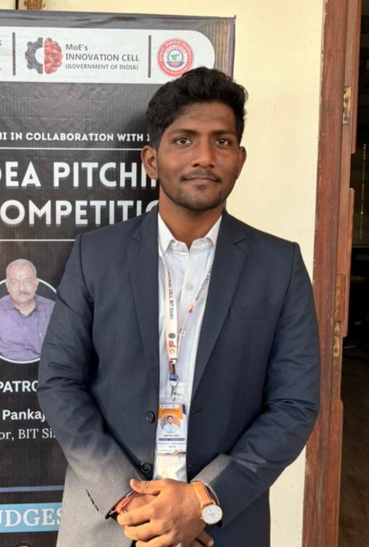

Krrish Raj

Summary
Motivated and detail-oriented undergraduate student with a strong interest in technology, innovation, and problem-solving. Experienced in project-based learning, technical presentations and teamwork, with a proven ability to communicate ideas effectively and adapt quickly to new challenges. Seeking opportunities to apply technical knowledge and analytical skills in a growth-oriented environment.
Education
Bachelor of Technology (B.Tech) – Electrical Engineering
BIT, Sindri Jharkhand
2024-2028
- Relevant coursework: Electrical Machines, Power Systems, Control Systems, Measuring Instruments
- Actively participated in technical events, seminars, and innovation-based competitions
Work Experience
Vocational Trainee – Electrical Department
June 2025 – July 2025
- Gained hands-on exposure to industrial electrical systems and power distribution
- Studied operation and maintenance of motors, transformers, and control panels
Student Project Developer – SmartAttend (Academic Project)
- Developed a smart attendance system using HTML, CSS, and JavaScript
- Implemented facial recognition concepts and real-time attendance tracking
Skills
Technical Skills
- HTML, CSS, JavaScript
- Basic Python
- Electrical Measuring Instruments
- Power Systems & Electrical Machines (Fundamentals)
Soft Skills
- Communication & Presentation
- Problem Solving
- Teamwork & Leadership
- Research & Analytical Thinking
Awards and Certifications
- Finalist in Idea Pitching Competition at the largest technical event of the college
- Actively led sustainability awareness campaigns on energy conservation and eco-friendly practices
- Consistently ranked among top academic performers
- Participated in debates, extempores, and technical presentations
- Member of the college ECO Club, contributing to environmental initiatives
Others